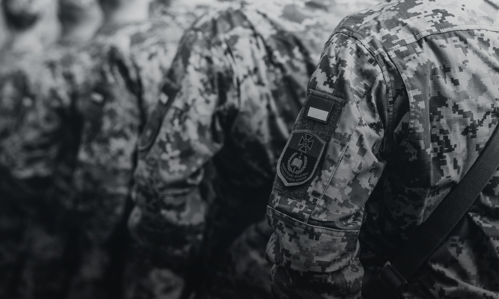

ВІДПОВІДІ НА ПИТАННЯ МАЙБУТНІХ КУРСАНТІВ
ЗАДЛЯ ЗАБЕЗПЕЧЕННЯ ВЛАСНОЇ БЕЗПЕКИ ТА БЕЗПЕКИ СВОЇХ РІДНИХ
НЕ РОЗГОЛОШУЙТЕ СТОРОННІМ ОСОБАМ ПРО СВІЙ НАМІР ПРИЄДНАТИСЬ ДО ЛАВ СБУ.
ЗА ОФІЦІЙНИМИ КОНСУЛЬТАЦІЯМИ З ПРИВОДУ ВСТУПУ
ЗВЕРТАЙТЕСЬ ЛИШЕ ДО ОФІЦІЙНИХ ДЖЕРЕЛ АКАДЕМІЇ СБУ.
ЗАГАЛЬНІ ПИТАННЯ ПЕРЕД ПОДАЧЕЮ ЗАЯВИ НА НАВЧАННЯ
Як проходить відбір на навчання у статусі курсанта?
Вступ до Академії на навчання у статусі курсанта проходить у три етапи:
1 ЕТАП – подача заяв, регіональний відбір та складання НМТ.
2 ЕТАП – проходження фінального відбору в Академії.
3 ЕТАП – складання рейтингових списків за конкурсним балом НМТ та подача оригіналів документів.
Яка різниця між курсантом і студентом?
Курсанти Академії СБУ – військовослужбовці за контрактом, які після випуску в обов’язковому порядку підписують контракт про військову службу в органах СБУ.
Курсанти навчаються, проживають та харчуються за державним замовленням (безкоштовно), отримують грошове забезпечення, а період навчання зараховується до військової вислуги років.
Студенти Академії СБУ здобувають цивільну освіту, навчання відбувається на платній основі. Студенти не отримують військове звання (за бажанням вони можуть додатково пройти навчання за програмою підготовки офіцерів запасу) і не отримують гарантій працевлаштування в СБУ. Кращі з них можуть бути рекомендовані в Службу безпеки України.
У яких містах є Академія СБУ?
Національна академія Служби безпеки України – єдина в Україні і знаходиться в Києві.
Яка кількість місць на навчання у статусі курсанта?
Щороку обсяг набору змінюється.
Які вікові рамки для вступників?
До участі в конкурсному відборі на вступ в Академію допускаються громадяни України віком від 17 до 30 років.
На момент проходження відбору вступнику може бути 16, але в році вступу йому/їй має виповнитись 17 років.
Чи можуть дівчата вступити до Академії СБУ?
Так, дівчата можуть вступати на будь-яку спеціальність.
Чи можу я вступити, якщо навчаюсь в 11 класі / на другому курсі коледжу / є випускником коледжу?
Так, можете. Регіональний відбір буде відбуватись паралельно із вашим навчанням.
Чи мають переваги при вступі випускники військових ліцеїв?
Усі абітурієнти вступають на рівних умовах.
Переваги, які мають випускники військових ліцеїв, – покращена фізична підготовка та легша адаптація до військової служби.
Чи можливе переведення з іншого ЗВО або з іншого військового закладу вищої освіти?
Перевестись з іншого ЗВО на навчання в статусі курсанта неможливо – можна лише вступити на перший курс.
Академія – єдиний в Україні освітній заклад контррозвідувального спрямування. Курсанти вивчають предмети й спеціальні дисципліни, яких немає в інших ЗВО, тому при переведенні з будь-якого іншого закладу вищої освіти обсяг академічної різниці буде перевищувати 20 кредитів.
Який мінімальний прохідний бал?
Наразі мінімальний бал, з яким можна брати участь у конкурсному відборі, – 130 балів. Цей бал дозволяє вступнику брати участь в конкурсному відборі за результатами НМТ, але не гарантує вступ.
Чи впливає середній бал атестату на вступ?
Ні, не впливає, але для вступу ви маєте надати свідоцтво про отримання повної загальної середньої або професійно-технічної освіти.
Який четвертий предмет НМТ обирати?
Вступник може обирати будь-який четвертий предмет НМТ.
Чи можна вступити, якщо не склав якийсь з предметів на НМТ?
На жаль, ні. Якщо хоча б один з предметів НМТ не складений, вступити на навчання в статусі курсанта неможливо.
Чи обов’язково вступнику знати англійську мову?
Вступник може не обирати англійську мову як четвертий предмет НМТ, але в Академії усі курсанти вивчатимуть англійську як першу або другу іноземну мову.
Скільки триває навчання?
Навчання триває 4 роки.
Курсанти здобувають бакалаврський рівень освіти та отримують офіцерське звання.
Чи є заочна форма навчання?
Курсанти навчаються лише на денній формі.
Чи є пільги при вступі?
В Академії СБУ такого поняття як «пільги» наразі немає.
Натомість є спеціальні умови участі в конкурсному відборі, а саме: зарахування за співбесідою, участь у конкурсному відборі за іспитами та/або квотою-1.
Повну інформацію про спеціальні умови та категорії осіб, які під них підпадають, читайте в ПРАВИЛАХ ПРИЙОМУ.
Чи гарантоване курсантам працевлаштування після випуску?
Так, усі курсанти після випуску обов’язково підписують контракт на 5 років, а роки навчання зараховуються їм до військової вислуги.
Чи можна після вступу відмовитись від проходження військової служби?
Курсант, який вступив на навчання у статусі військовослужбовця, не може просто відмовитися від проходження військової служби. Закон дозволяє дострокове розірвання контракту, але лише за підстав, передбачених Законом України «Про військовий обов’язок і військову службу».
Q&A: ПОДАННЯ ЗАЯВИ НА ВСТУП
Як краще подати заяву: особисто занести до регіонального Управління СБУ чи надіслати на електронну пошту Академії?
Вступник має особисто подати заяву до регіонального Управління СБУ. Якщо немає можливості це зробити, ви можете зробити скан-копію заповненої заяви і надіслати її на електронну пошту: na_f1@ssu.gov.ua.
На кого подавати заяву?
Заява подається на ім’я Голови Служби безпеки України.
Як знайти регіональне Управління СБУ?
На сайті Служби безпеки України https://ssu.gov.ua/ у розділі «КОНТАКТИ» внизу сторінки ви можете побачити інтерактивну мапу. Після натискання на відповідну область справа з’являться адреса та контактний номер телефону конкретного Управління.
Якщо ви не зможете знайти адресу необхідного Управління, можете надіслати заяву на електронну пошту na_f1@ssu.gov.ua і вона буде передана до органу СБУ відповідно до вашого місця реєстрації.
Чи можу я подати заяву, якщо знаходжусь за кордоном?
Так, але ви маєте вказати у заяві український номер телефону та прибути до України для проходження всіх етапів перевірки. Участь у відборі на навчання в статусі курсанта можлива лише за умови вашого перебування в Україні.
Важливо! Для вступу ви маєте надати свідоцтво про отримання повної загальної середньої освіти в Україні (або інше свідоцтво, яке відповідає 5 рівню Національної рамки кваліфікацій).
Чи можу я зазначити у заяві декілька спеціальностей, на які хочу вступати?
В одній заяві можна вказати лише одну спеціальність.
Яка різниця між спеціальностями К1 «Державна безпека» і К3 «Національна безпека»?
На обох спеціальностях ви вивчатимете дисципліни, необхідні для оперативного співробітника СБУ.
Особливістю навчання за спеціальністю «Національна безпека» є посилена кібернетична складова. Курсанти вивчають інформаційно-комунікаційні системи та мережі, стратегічні комунікації тощо.
На спеціальності «Державна безпека» готують класичного контррозвідника. Якщо вам ближче гуманітарні науки і ви мрієте про оперативну роботу в СБУ, сміливо обирайте цю спеціальність. Якщо ж хочете розвиватися в кіберзахисті та точних науках — обирайте «Національну безпеку».
Вивчення яких мов передбачає спеціальність B11 «Філологія»?
Курсанти опановують дві іноземні мови: англійську та одну з дванадцяти мов, представлених в Академії (східні, східноєвропейські, романо-германські).
Чи залежить працевлаштування випускника від обраної спеціальності?
Жодна зі спеціальностей не обмежує перелік підрозділів СБУ, де ви зможете проходити військову службу після випуску.
Яку спеціальність обрати, якщо вступник у майбутньому планує стати оперативним співробітником?
Будь-яку із запропонованих спеціальностей. Спеціальність не обмежує вектор майбутнього професійного розвитку випускника в межах СБУ.
Яку спеціальність обрати вступнику, який планує подальшу службу в ЦСО «А» СБУ?
Будь-яку, оскільки цілеспрямовану підготовку кадрів для ЦСО «А» СБУ ми не здійснюємо. Водночас, курсанти, які бажають стати спецпризначенцями, самостійно посилено працюють над своєю фізичною і психологічною витривалістю, щоб пройти додатковий відбір. Для цього в Академії створені всі необхідні умови та ресурси. Чимало випускників долучаються до бойового підрозділу СБУ.
Чи має надійти якесь підтвердження отримання заяви Академією СБУ?
Так. Якщо ви надсилали на нашу електронну пошту заяву про вивчення вас як кандидата на навчання у статусі курсанта, то протягом 2–3 робочих днів на ваш e-mail має надійти лист-підтвердження. Якщо лист не отримали, зверніться до Приймальної комісії за номером +38 063 229 58 45 (WhatsApp, Signal) або в месенджери соціальних мереж Академії.
Як швидко мають зателефонувати з Управління, якщо вступник подавав заяву на електронну пошту Академії СБУ?
Виклик з Управління має надійти протягом 2–3 тижнів з моменту підтвердження Академією отримання вашої заяви. Якщо визначений термін сплив, а вам так і не зателефонували, зверніться, будь ласка, до Приймальної комісії за номером +38 063 229 58 45 (WhatsApp, Signal) або в месенджери соціальних мереж Академії.
Q&A: РЕГІОНАЛЬНИЙ ВІДБІР
Чи можна вступити з тату?
Відповідні рішення ухвалює виключно військово-лікарська комісія. Під час проходження ВЛК вас поінформують щодо можливості проходження військової служби та навчання в Академії.
Чи можна вступити з поганим зором?
Рішення з цього питання приймає лише ВЛК. У процесі проходження ВЛК ви отримаєте інформацію щодо можливості проходження військової служби та навчання в Академії.
Як підготуватись до професійно-психологічного відбору?
Тренуйтеся виконувати логічні, увагові та вербальні тести у форматі з обмеженим часом, працюйте над розвитком концентрації та пам’яті.
Чітко усвідомте та сформулюйте для себе, чому ви хочете вступити саме до Академії СБУ.
Не намагайтеся «вгадати правильну відповідь», будьте чесними та щирими.
Чи обов’язкове проходження поліграфа?
Так, всі вступники в обов’язковому порядку проходять перевірку на поліграфі. Процедура проходження поліграфу до перевірки не розголошується.
Чи важливий попередній іспит з фізичної підготовленості?
Так, всі етапи попередньої перевірки важливі. Результат попереднього іспиту з фізичної підготовленості на відборі в Академії СБУ не зараховується.
Як відбувається направлення на проходження відбору в Академії?
Якщо ви успішно пройшли всі етапи перевірки в регіоні, після отримання результатів НМТ вам нададуть направлення на проходження відбору безпосередньо в Академії СБУ.
Q&A: ВІДБІР В АКАДЕМІЇ СБУ
Де проходить і скільки триває відбір?
Відбір проходить у Києві та триває 3–4 дні. Вступники на цей період житлом не забезпечуються.
Що важливіше: фізична підготовка чи результат НМТ?
Для здачі іспиту ви маєте лише одну спробу. У випадку отримання абітурієнтом менше 60 балів за виконання вправ або невиконання порогового рівня (12 балів) в одній із вправ іспит вважається нескладеним.
Якщо вступник не складає іспит з фізичної підготовленості, то вибуває з конкурсу. Остаточний відбір до Академії СБУ відбувається за результатами НМТ.
Тобто ваш вступ залежить і від фізичної підготовки, і від рівня НМТ.
Чи можна повторно скласти іспит з фізичної підготовленості, якщо перша спроба була невдалою?
Ні, для здачі іспиту ви маєте лише одну спробу. У випадку отримання абітурієнтом менше 60 балів за виконання вправ або невиконання порогового рівня (12 балів) в одній із вправ іспит вважається нескладеним.
Чи важливий бал за іспит з фізичної підготовленості?
Остаточний відбір до Академії СБУ відбувається за результатами НМТ, але якщо на останнє місце в рейтингу претендують два вступники з однаковим балом, перевагу має той, хто має вищий бал за іспит з фізичної підготовленості.
Q&A: ОСВІТНІЙ ПРОЦЕС В АКАДЕМІЇ СБУ
Чи обов’язкове проживання в казармі?
Курсанти обох статей проживають у комфортних гуртожитках. Курсанти чоловічої статі зобов’язані прожити у гуртожитку 2 роки. Після цього терміну, залежно від дисципліни та навчальної успішності, курсанту може бути надане право на проживання за межами Академії.
Чи отримують курсанти стипендію?
Так, усі курсанти без винятку отримують грошове забезпечення. Розмір грошового забезпечення залежить від навчальної успішності.
Чи включає освітній процес курсантів практичну підготовку на базі підрозділів СБУ?
Так, протягом навчання курсанти тричі проходять практику та стажування в органах і підрозділах СБУ.
Чи може курсант їздити на вихідні додому?
Курсанти не мають права на виїзд за межі Київського гарнізону, крім визначених випадків, коли такий дозвіл надається в окремому порядку.
Чи передбачені відпустки для курсантів?
Так, курсанти мають основну літню та зимову канікулярні відпустки.
Чи може курсант відвідувати додаткові спортивні секції/гуртки за межами Академії?
Так, особистий розвиток підтримується та заохочується в Академії СБУ.
Які є спортивні секції в Академії?
• Рукопашна підготовка (боротьба, бокс, дзюдо, самбо);
• Легка атлетика;
• Кросфіт;
• Секції з ігрових видів спорту (футбол, футзал, баскетбол);
• Поліатлон;
• Плавання (за межами Академії).
Окрім спортивних секцій, в Академії також є команда з вогневої підготовки.